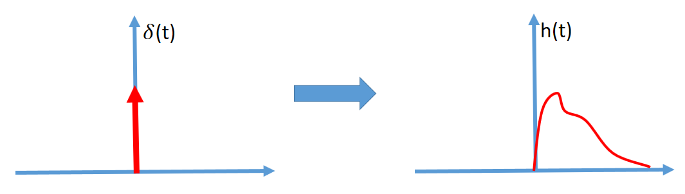
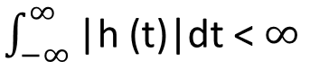
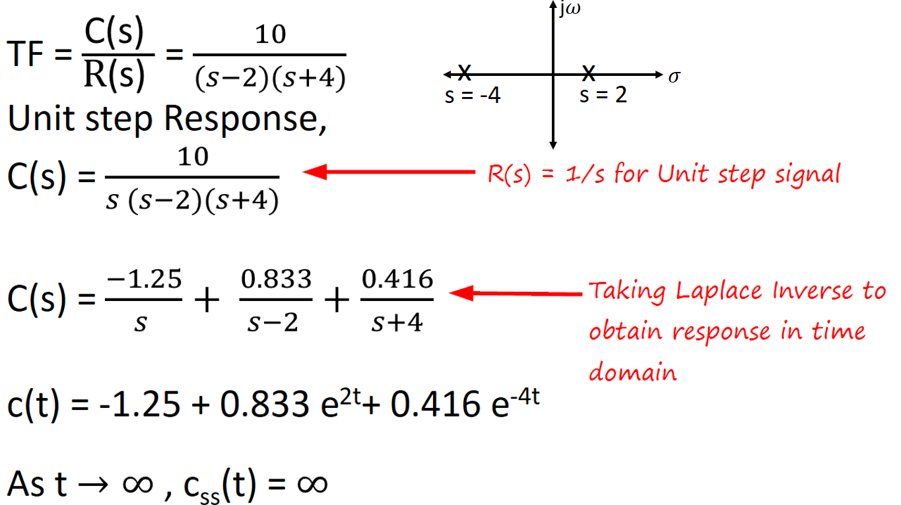

HOME BLOG EBOOKS ABOUT CONTACT SHOP
A system is said to be stable, if it does not exhibit large changes in its output for a small change in its input. An unstable system is of no practical use and hence effort much be taken in ensuring stability.
To determine the stability of a Control system, the concept of BIBO stability is used. BIBO stability stands for bounded input, bounded output stability. A BIBO stable yields a bounded output for a bounded input. This is to say that as long as we input a signal with an absolute value less than some constant, we are guaranteed to have an output with absolute value less than some other constant.
A bounded signal is any signal that does not tend to infinity at no point in time, including the end behavior. The Unit impulse is the bounded signal of choice to determine the stability of a system.

Mathematically, a system is said to be BIBO stable if,

Where h(t) is the Unit impulse response.
Although stability can be determined this way. It is much easier to infer the stability of the system from the pole zero plot of the transfer function. For stable systems, all closed loop poles must be to the left of the imaginary axis.
Consider the following example

Here the pole at s=2 corresponds to the term e2t in the step response. As t→∞, this term tends to ∞, not allowing the response to settle down to a steady state value, making the system unstable. If any of the poles of the system lies on the imaginary axis, then the system is said to be marginally stable, meaning the response will keep on oscillating without either settling down or tending to infinity.